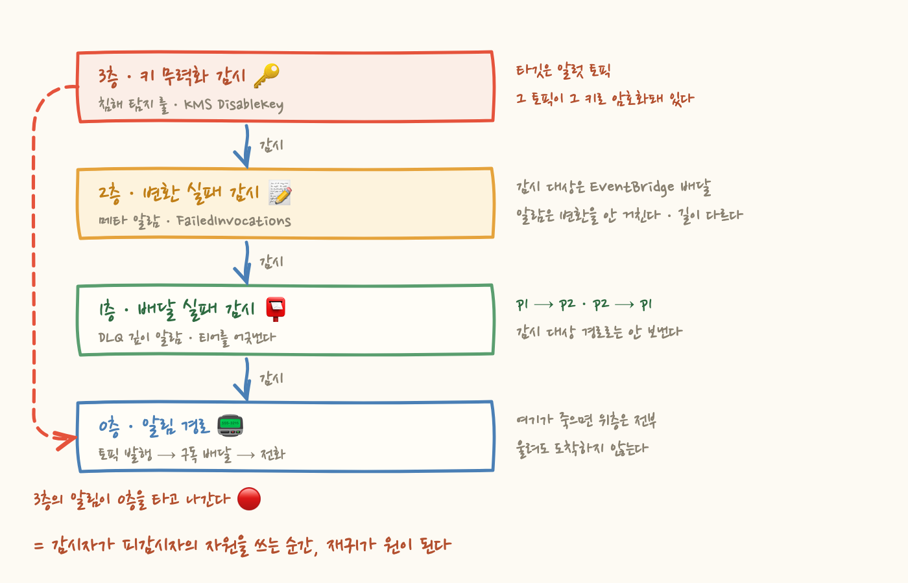
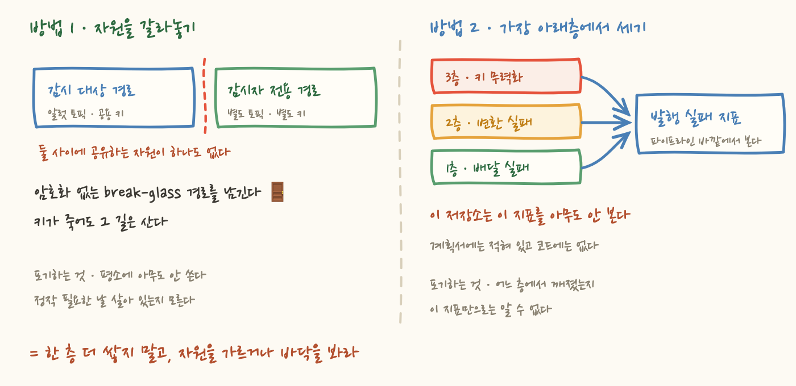

알림 경로를 하나 깔았다고 해봐요. 알람이 울리면 티어별 토픽으로 발행되고, 그 토픽을 구독한 외부 모니터링 서비스가 온콜에게 전화를 겁니다. 여기까지는 평범해요.
그 다음에 오는 질문이 이상합니다. 그 경로 자체가 고장나면, 누가 알려주죠?
답은 뻔해 보여요. 경로가 고장난 걸 감시하는 알람을 하나 더 걸면 되죠. 그런데 그 알람은 어디로 보내야 하나요. 방금 고장났다고 판정한 그 경로로 보낼 수는 없잖아요. 그래서 다른 경로로 보냅니다. 그럼 그 다른 경로가 고장나면요. 이렇게 질문을 따라가면 한 층씩 위로 올라가게 되는데, 이 저장소에서는 어느 지점에서 원이 닫혔어요. 감시하는 쪽이 감시당하는 쪽의 자원을 쓰고 있었거든요. 이 글은 그 원을 한 바퀴 따라간 기록입니다.
SNS 는 메시지를 보관하지 않아요. 구독자가 응답하지 않으면 몇 번 재시도하고 그냥 버립니다. 외부 모니터링 서비스가 401 을 돌려주거나 엔드포인트가 죽으면 알림이 조용히 사라져요. 알람은 정상적으로 ALARM 으로 바뀌었고, 발행도 됐고, 콘솔 어디에도 빨간 게 없는데 전화만 안 옵니다.
그래서 구독마다 DLQ(배달 실패 큐)를 붙였어요. 재시도를 모두 소진한 메시지가 사라지지 않고 큐에 남습니다. 그리고 그 큐의 깊이에 알람을 겁니다. 큐에 뭐라도 들어 있으면 알림 경로가 끊겨 있다는 뜻이니까요.
여기서 진짜 문제가 나옵니다. 이 알람은 어디로 보내죠?
처음엔 아무 생각 없이 전부 p2(채팅 카드) 로 보냈어요. 그래서 p2 의 DLQ 알람이 p2 로 발화했습니다. p2 배달이 깨졌다는 사실을, 깨진 p2 로 알리는 거예요. 그 알림도 같은 DLQ 로 들어가고, DLQ 는 다시 알람을 울리고, 그 알람도 p2 로 갑니다. 코드 바로 위 주석에는 "이 알람들은 알럿 체계 자신을 감시한다" 고 적혀 있었는데, 정작 액션은 하드코딩돼 있었어요.
고친 방식은 티어를 어긋나게 라우팅하는 겁니다.
이게 가능했던 건 이 저장소에서 tier 가 "얼마나 급한가"가 아니라 "어디로 보내는가" 이기 때문이에요. 라우팅은 오직 토픽으로만 결정되고, 매핑 테이블이나 조건 분기 코드가 없습니다. 그래서 예외 장치를 만들 필요 없이 tier 값 하나만 바꿔 끼우면 규칙이 그대로 성립해요. 원칙을 한 줄로 적으면 이겁니다. 감시 대상인 경로로는 절대 보내지 않는다.
다음 층은 알림을 보기 좋게 만드는 과정에서 생겼어요.
이벤트 기반 알림(DB 페일오버, 컨테이너 배포 실패)이 채팅에 아무것도 남기지 않는 문제가 있었어요. 전화는 가는데 무슨 일인지 볼 곳이 없었죠. 원인은 AWS Chatbot 이 CloudWatch 알람 형식만 렌더하고 나머지 원본 JSON 은 버리기 때문입니다. 그때까지 만든 알람 32개는 잘 뜨는데, 이벤트 넷만 조용히 사라졌던 거예요.
해법은 EventBridge 의 input_transformer 로 이벤트를 Chatbot 이 아는 커스텀 카드 JSON 으로 바꿔주는 거였어요. 여기서 람다를 쓰지 않은 이유가 이 글의 주제와 정확히 맞닿습니다. 알림 경로 안에 조용히 죽을 수 있는 컴포넌트를 하나 늘리면, 그걸 감시할 알람이 또 하나 필요해지니까요. 층이 늘어나는 걸 애초에 막은 선택이에요.
그런데 변환 자체도 실패할 수 있습니다. 치환 결과가 유효한 JSON 이 아니면 배달이 실패해요. DB 메시지나 컨테이너 실패 사유에 따옴표가 하나 섞여 들어가면 그렇게 됩니다. 그리고 이 실패가 고약한 건 룰은 존재하고 타깃도 붙어 있어서 콘솔에서는 완벽하게 정상으로 보인다는 점이에요.
그래서 AWS/Events 의 FailedInvocations 에 메타 알람을 걸었습니다. 배달이 실패한 횟수를 세는 거예요. 이 알람은 p2 로 보내는데, 얼핏 1장의 원칙을 어긴 것처럼 보입니다. 감시 대상이 p2 로 가는 카드 경로인데 알람도 p2 로 가니까요.
하지만 어긋난 게 맞아요. 여기서 실패하는 것은 EventBridge 배달이고, 이 알람은 CloudWatch 알람입니다. CloudWatch 에서 토픽으로 가는 길은 변환을 거치지 않아요. 같은 토픽에 도착하지만 도착하기까지의 길이 다릅니다. 1장의 원칙은 "같은 티어를 쓰지 마라"가 아니라 "같은 경로를 쓰지 마라"였던 거예요.
한 가지 판단을 더 적어두고 싶어요. 카드 경로를 만들면서 기존 경로를 걷어내지 않았습니다. 룰에 타깃을 하나 더 붙였을 뿐이에요. 원본은 p1 로 그대로 가고, 카드는 p2 로 추가로 갑니다. 변환이 깨지면 배달 자체가 실패하는데 그때 전화까지 같이 죽으면 안 되니까요. 아직 실물로 검증되지 않은 변환을 전화 경로 앞에 세우지 않는다. 예쁜 알림은 앞이 아니라 옆에 얹는 게 맞습니다.
세 번째 층은 침해 탐지 쪽에서 왔어요. 룰 하나가 이렇게 생겼습니다.
코드 주석에는 이렇게 적혀 있어요. 이 계정의 CMK 에는 알럿 토픽 암호화 키가 포함된다. 그 키가 비활성화되면 SNS 발행이 실패하고 알림 경로 전체가 조용히 죽는다. 즉 이 룰은 침해 탐지이자 알럿 파이프라인 자기 감시이기도 하다.
진단이 정확해요. 무엇이 위험한지 알고 썼습니다. 그런데 다른 파일을 열어보면 이렇게 돼 있습니다.
알림이 나가는 그 토픽이, 바로 그 키로 암호화돼 있어요.
그러니까 키를 끄면 이렇게 됩니다. 키가 즉시 비활성화되고, CloudTrail 이 이벤트를 올리고, 룰이 매칭되고, 타깃인 토픽으로 발행을 시도합니다. 그리고 그 발행이 실패합니다. 암호화에 쓸 키가 방금 꺼졌으니까요. 알림 경로가 죽었다는 알림이 죽은 그 경로로 나갑니다. 원이 닫힌 거예요.
여기서 디테일 하나가 이 이야기를 정확하게 만듭니다. 이 룰은 두 이벤트를 함께 잡아요.
삭제 예약은 최소 7일의 대기 기간이 있어서, 예약을 걸어도 그 기간 동안 키는 멀쩡히 동작합니다. 그래서 이 이벤트는 알림이 잘 나가요. 심지어 그 7일 안에 취소하면 아무 일도 안 일어나는, 되돌릴 수 있는 사건이고요.
반면 DisableKey 는 즉시 발효됩니다. 그리고 이쪽이 진짜 공격이에요. 두 이벤트를 한 룰에 묶었는데, 되돌릴 수 있는 쪽만 잡히고 즉시 효력이 생기는 쪽은 못 잡습니다. 잡히는 쪽과 위험한 쪽이 정확히 어긋나 있어요. 커버리지가 반쪽인 게 문제가 아니라, 남은 반쪽이 하필 위험한 쪽인 게 문제입니다.
그리고 가장 마음에 걸리는 건 이거예요. 1장에서 세운 원칙이 여기엔 적용되지 않았습니다. DLQ 파일에는 "감시 대상인 경로로는 절대 보내지 않는다"가 주석으로 적혀 있고 코드로도 구현돼 있어요. 그런데 침해 탐지 파일에서는 같은 위험을 주석으로 정확히 진단해놓고, 타깃은 그 위험에 그대로 걸려 있는 토픽입니다. 같은 저장소인데 파일이 다릅니다. 원칙은 파일 단위로 적용되고 저장소 단위로는 적용되지 않았어요.

여기까지 오면 구조가 보여요. 메타 감시를 한 층 올리면, 그 층을 감시할 층이 또 필요합니다. 무한히 올라갈 수는 없고, 실제로는 올라가다가 어딘가에서 아래층의 자원을 다시 밟게 돼요. 그럼 원이 닫힙니다.
그래서 재귀를 늘리는 방식으로는 이 문제가 안 풀립니다. 멈추는 방법은 두 가지예요.
감시자와 피감시자가 자원을 아예 공유하지 않게 만드는 겁니다. 별도 토픽과 별도 키를 두고, 여기에 암호화가 없는 break-glass 경로를 하나 더 놓습니다. 키가 죽어도 그 경로는 살아 있어야 하니까 암호화를 포기하는 거예요. 재귀가 아니라 분리로 푸는 방식입니다.
대가가 있어요. 관리할 자원이 늘고, 암호화 없는 발행 경로가 하나 생기고, 무엇보다 평소에 아무도 안 씁니다. 안 쓰는 경로는 방치되기 마련이에요. 정작 필요한 날에 그게 살아 있는지 아무도 모릅니다. 그래서 이 방법을 택하면 "그 경로가 살아 있는지 주기적으로 확인하는 장치"가 세트로 따라와야 해요.
다른 방식은 층을 올리는 대신 바닥을 보는 겁니다. 발행 자체가 몇 번 실패했는지를 세는 지표 하나면, 위층에서 무슨 일이 나든 결과는 전부 거기로 드러나요. 변환이 깨졌든, 키가 꺼졌든, 구독이 죽었든, 나가야 할 게 안 나갔다는 사실은 바닥에 남습니다.
대가는 해상도예요. 이 지표는 "뭔가 안 나갔다"까지만 말해주고 어느 층에서 깨졌는지는 알려주지 않습니다. 그리고 이 지표를 보는 알람마저 같은 토픽으로 보내면 또 같은 문제라서, 이건 외부 모니터링 서비스처럼 이 파이프라인 바깥에서 봐야 의미가 있어요.
그런데 이 저장소의 현재 상태는 좀 앞뒤가 안 맞습니다. EventBridge 배달 실패는 봅니다(2층). DLQ 큐 깊이도 봅니다(1층). 그런데 그 사이에 있는 발행·배달 실패 지표는 아무도 안 봐요. 계획 문서에는 항목 번호까지 붙어서 적혀 있는데, 코드에는 없습니다. 층을 두 개나 쌓아 올려놓고 정작 바닥을 안 본 거예요.

층 이야기 말고, 같은 뿌리에서 나온 사고가 하나 더 있어요. 짧게 씁니다.
알람 모듈에는 이런 규칙이 있어요. P1 알람의 복구는 한 단계 낮은 티어로 보낸다.
의도는 명확하고 옳아요. 새벽 3시에 장애로 전화가 한 번 오고, 3시 15분에 자동 복구로 또 한 번 오면 안 되니까요. 복구는 급하지 않고, 기록만 남으면 됩니다.
문제는 그 낮은 티어에 수신자가 없었다는 거예요. 구독을 코드로 가져올 때 p1 과 p3 만 만들었거든요. p2 는 사람을 호출하지 않는 티어니까 굳이 필요 없다고 본 겁니다. 그래서 약 18시간 동안 발생은 나가고 복구는 소멸했어요.
여기서 위험을 잘못 읽기 쉬워요. "복구된 걸 모른다"는 별로 안 무섭습니다. 진짜 위험은 이거예요. 복구 신호가 안 가면 인시던트가 열린 채로 남습니다. 그러면 그 다음에 진짜로 발생한 알람이 기존에 열려 있던 인시던트에 묻혀요. 첫 번째 장애를 놓치는 게 아니라 두 번째 장애를 놓치는 구조입니다.
다행히 그 18시간 동안 발생과 복구를 오간 알람이 없어서 실제 피해는 없었어요. 그런데 그건 운이었지 설계가 아닙니다. 고친 방식은 p2 구독을 추가하되 온콜 라우팅 파라미터는 빼는 거였어요. 도착은 하지만 전화는 안 걸립니다. 그리고 "왜 p2 에 구독이 있어야 하는가"를 코드 바로 옆 주석에 명시해뒀어요. 안 그러면 다음 사람이 또 "p2 는 호출 안 하니까 필요 없네" 하고 지울 테니까요.
여기서 규칙 하나를 얻었어요. 티어를 낮춰 보낸다는 건 "덜 급하다"는 뜻이지 "안 봐도 된다"는 뜻이 아니에요. 낮은 티어에 수신자가 없으면 그건 낮춰 보낸 게 아니라 그냥 버린 겁니다. 실제로 이 저장소에서 비슷한 판단이 또 나왔어요. 보안 룰을 P3 로 걸어 관찰부터 하려다가, p3 에 채팅 구독이 없어서 관찰 자체가 안 된다는 걸 확인하고 계획을 바꿨습니다. "일단 낮은 티어로 걸고 실측하자"는 항상 옳은 것 같지만, 그 티어 끝에 사람이 있을 때만 옳아요.
알림 경로를 설계할 때 우리는 보통 "이게 울리나"를 묻습니다. 테스트 알람을 보내보고, 전화가 오면 됐다고 하죠. 그런데 이 글의 사고들은 전부 그 질문을 통과한 상태에서 일어났어요. 알람은 정상이었고, 룰도 있었고, 타깃도 붙어 있었습니다.
그러니 질문을 바꿔야 해요. "이게 안 울릴 때, 그 사실을 무엇이 알려주나?"
이 질문에 답하다 보면 반드시 한 지점에 도착합니다. 감시자가 피감시자의 자원을 쓰고 있는 지점이요. 같은 토픽, 같은 키, 같은 변환기, 같은 구독이 그런 자리예요. 거기가 원이 닫히는 곳이고, 층을 하나 더 쌓아서는 절대 못 빠져나오는 곳이에요.
메타 감시는 층으로 푸는 문제가 아니라 자원 공유로 푸는 문제였습니다. 어디까지 올라갈지가 아니라, 어디서 자원을 가를지를 정하는 일이에요.